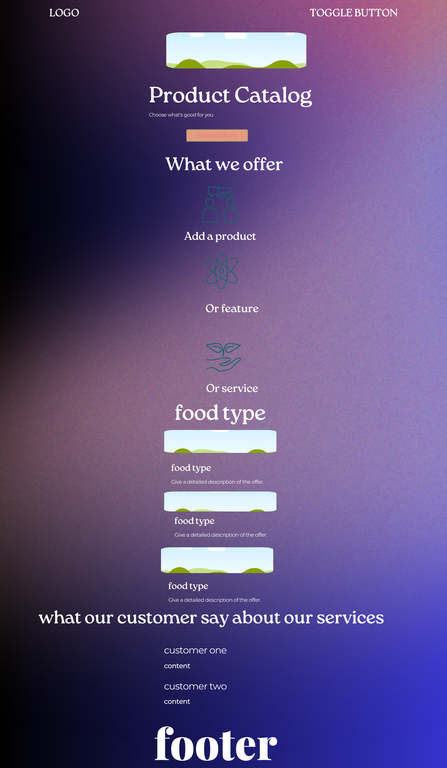
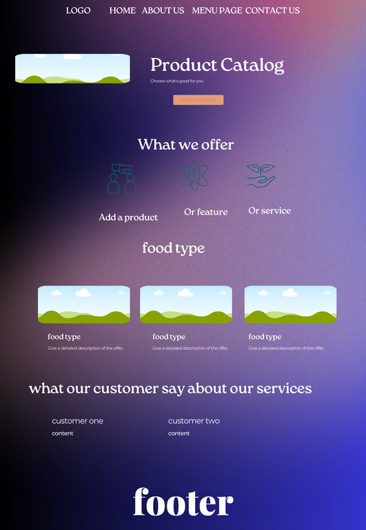

Project Site Plan
Site Name
Restaurant Food Ordering website.
Restaurant Food Ordering website is to provide an efficient, user-friendly and visual appealing platform for the customers to browse the menu and place their order for the food which s/he interested to eat.
Optional Domain Availability: my project link
Site Purpose
- Enhance Customer Convenience – Allows customers to view the menu and order food online without visiting the restaurant.
- Improve Restaurant Efficiency – Reduces manual order-taking and enhances order management.
- Increase Online Presence – Helps the restaurant reach a wider audience and attract more customers.
- Enhance Web Development Skills – Provides hands-on experience in HTML, CSS, and JavaScript for building interactive and responsive websites.
Scenarios
- What projects have you completed that demonstrate your skills?
- How can I contact you for potential job opportunities?
Color Schema
Primary Color: #6f6af8 (Used for headings and accents)
Secondary Color: #0f0f3e (Used for background)
Color Schema Used on Document
The colors defined in the color schema section are applied throughout this document.
Typography
Font 1: Arial - Used for body text.
Font 2: Roboto - Used for headings.
Typography Used on Document
The selected fonts are applied to this document as specified.
Wireframes
Mobile View

Desktop View
